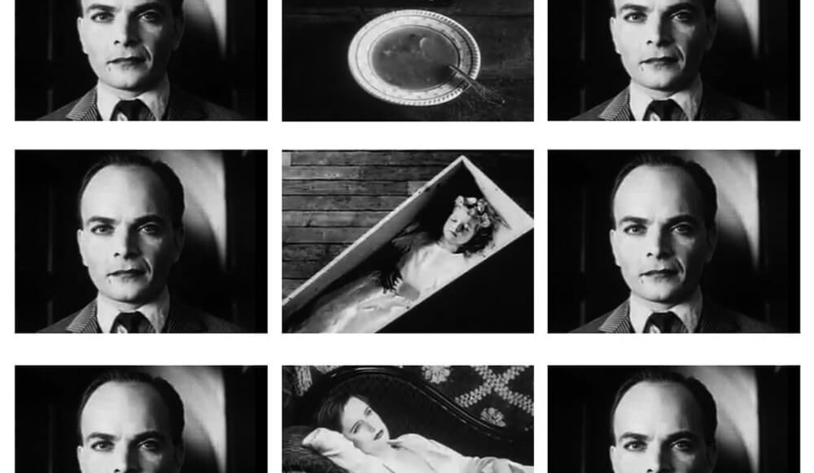
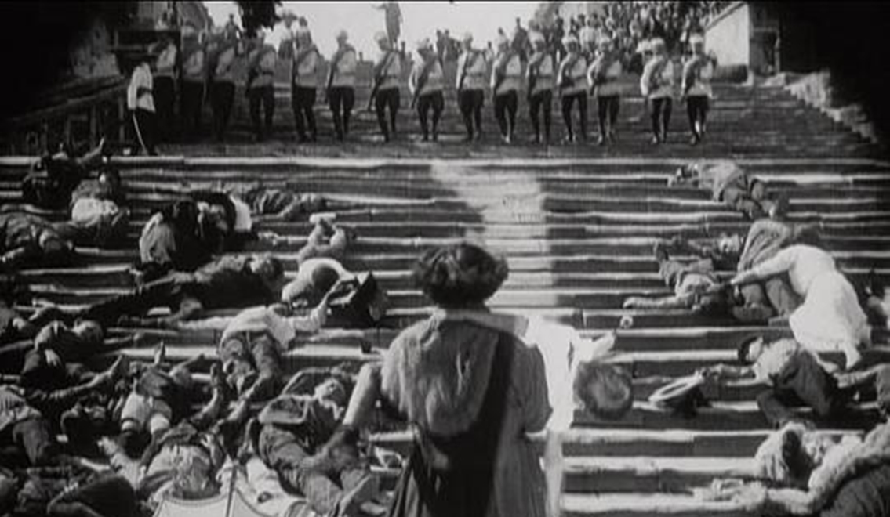
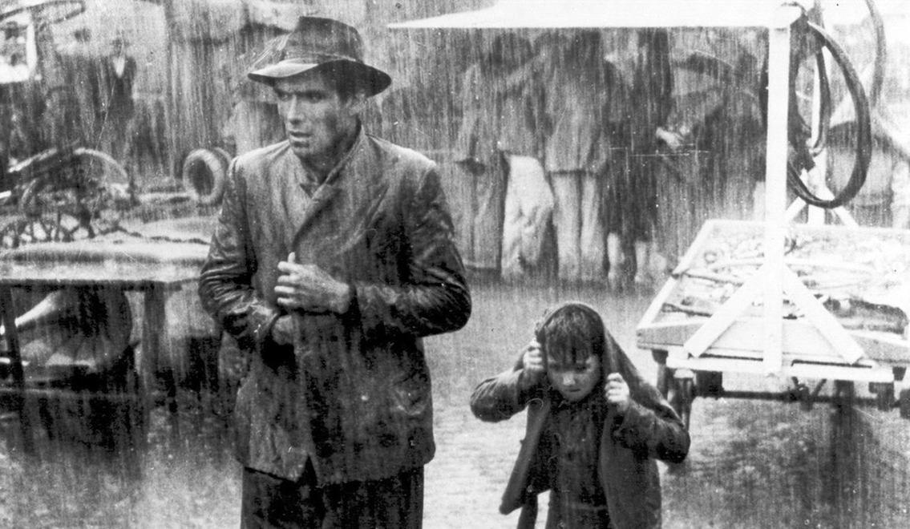

Ký Sự Điện Ảnh - Kỳ 4: Kẻ Cắp Xe Đạp Tân Hiện Thực Và Montage Xô Viết
Trong tiếng Nga, Montage nghĩa là “dựng phim” (editing), kỹ thuật dựng phim được xem là phần “hồn” cơ bản nhất của nghệ thuật điện ảnh.
Đầu thế kỷ 20, tại Nga dưới thời Chế Độ Cộng Sản, điện ảnh rất được khuyến khích. Bởi người ta tin rằng thông qua những thước phim tuyên truyền, có thể lồng ghép các thông điệp về giáo dục, về tư tưởng và chính trị. Cũng từ đây, thể loại phim tài liệu và thời sự bắt đầu phát triển mạnh.
Điểm giúp điện ảnh khác biệt với các loại hình nghệ thuật khác chính là nhịp điệu – trường đoạn – hình ảnh…,khi được kết hợp khéo léo vào một tổng thể sẽ thể hiện được toàn bộ ý nghĩa mà đạo diễn muốn truyền đạt. Điều này dẫn đến sự ra đời của Motange Xô Viết.
Montage Xô Viết không phải là một trào lưu chủ nghĩa điện ảnh, đây là cuộc cách mạng về nghệ thuật dựng phim. Hoặc nói xa hơn, Montage Xô Viết đặt ra khái niệm về việc dùng hình ảnh và sự đối lập, bố trí chúng theo một thứ tự được lập trình sẵn, kế hợp với việc sắp xếp camera, từ đó cho ra đời một đoạn phim mà không cần dùng thoại nhưng có thông điệp vẫn đủ làm bất cứ ai xem xong đều hiểu.
(Sergei Eisenstein)
Sergei Eisenstein – “cha đẻ của trường phái Monatge Xô Viết”, là một trong những đại diện tiên phong, trong việc có những đóng góp quý báu giúp thay đổi vĩnh viễn bộ mặt của nghệ thuật điện ảnh. Đồng thời ông cũng là người ảnh hưởng đến tất cả những gì liên quan đến “dựng phim” sau này. Eisenstein là học trò của nhà điện ảnh Kuleshov, cả hai đều cho rằng việc biên tập các cảnh quay với nhau, có khả năng thể hiện những thông điệp ẩn dụ riêng, giúp đạo diễn phô bày được ý đồ của mình.
Ví dụ đơn giản nhất trong việc thể hiện Montage trong kịch bản:
NỘI. SIÊU THỊ - ĐÊM
A tông cửa bước vào siêu thị
A cầm khẩu súng bắn vào đầu nhân viên thu ngân
A lấy kẹo ra ăn
Sau lưng A là bé gái 6 tuổi
Nguồn cảm hứng của Eisenstein được cho là đến từ thơ Haiku của Nhật Bản. Việc các câu thơ mô tả một ý khác nhau, tương đồng với từng cảnh quay, dù là mỗi cảnh đơn lẻ có thể vô nghĩa, nhưng khi ghép chúng với nhau lại mang đến một phạm trù mới. Thông qua chuỗi các cảnh quay được ghép lại, định nghĩa về một điều thấm kín, phi hữu hình sẽ được tái hiện, người xem cảm được nhờ vào sự đối lập của từng khung hình đơn lẻ.
Nếu so với kiểu dựng phim của Hollywood thì cách làm Eisenstein không chỉ đơn thuần là đem lại sự liền mạch, dễ hiểu. Ông nhấn mạnh vào sức mạnh của máy quay, việc áp dụng những khung hình có chủ đích. Từ đấy tạo nên sự đối xứng của phân đoạn, có thể trừu tượng lên và phức tạp hơn. Hoặc người đạo diễn cũng chính là biên kịch, khâu dựng phim sẽ thể hiện đúng ý đồ mà kịch bản hướng đến. Thông tin được truyền đi với thời gian ngắn hơn mà vẫn đầy đủ chi tiết. Sự dàn cảnh từ trường quay, vật dụng, góc máy…, tất cả phục vụ cho quá trình ghi hình. Đến khi dựng phim, mỗi cú cắt đều được tiếp diễn bằng hình ảnh ẩn dụ (hoặc tương phản với không khí phim, áp dụng nhiều khi muốn châm biếm hay để làm nổi bật lên mâu thuẫn trong tình huống nào đấy).

(Hiệu ứng Kuleshov)
Montage Xô Viết đã bám sát câu hỏi nguyên thủy “Nghệ thuật điện ảnh là gì?”. Có khi không cần kịch bản, không cần diễn viên, không cần thoại.., điện ảnh vẫn làm cho người ta hiểu bởi vì cách chúng giao tiếp – hình ảnh chứa đựng “tâm hồn” của sự kiện. Hay còn có thể gọi với cái tên quen thuộc hơn – Ngôn Ngữ Điện Ảnh.
Hình ảnh chuyển động được ghi lại, sau đó phát lên màn hình thông qua máy chiếu. Thế nhưng chúng có chứa đựng hàm ý gì bên trong không, hay chỉ đơn giản là thuật lại một sự việc gì đó? Câu trả lời chính là thứ được xem như sức mạnh tối thượng của điện ảnh – ý nghĩa biểu thị được tái hiện thông qua sự ẩn mình mà người nghệ sĩ tạo nên. Đó là màu sắc, âm thanh, câu chuyện…, nhưng không phải kể liền mạch, mà phụ thuộc vào độ sáng của việc sắp đặt các cảnh quay, bất chấp việc nó logic hay không logic. Sự sáng tạo không giới hạn biến điện ảnh trở thành thánh địa cho nghệ thuật, nơi mà con người cũng có thể trở nên vô hồn trước một vật thể nào đấy được “nhân hóa” lên. Một cách Show, Don’t Tell thuở sơ khai.

(phân cảnh "Bậc thềm Odessa" trong Battleship Potemkin (1925))
Montage Xô Viết đã tác động mạnh mẽ đến quá trình phát triển của ngành công nghiệp phim ảnh. Lối biên tập, cắt-dựng bao gồm nhân vật và bối cảnh, biểu hiện cho một thông điệp ngầm trên sự đối lập ở cùng một không gian, đã trở thành phần không thể thiếu trong điện ảnh hiện đại. Từ đây, nghệ thuật điện ảnh vươn lên tầm cao mới, phá bỏ những khiếm khuyết còn tồn động trong hội họa hay thơ ca - kịch nghệ.

(cảnh phim đối lập tại giáo đường bình yên lại trở thành nơi giết chóc đẫm máu hoảng loạn)
Sau Thế Chiến Thứ Hai, một trào lưu điện ảnh nổi lên, đi ngược lại với những chuẩn mực hoa mỹ, khác hẳn góc nhìn đậm tính văn nghệ trước đấy. Đó là Chủ Nghĩa Tân Hiện Thực của Ý (Italia).
Bại trận sau khi kết thúc chiến tranh, nền kinh tế đi xuống khiến cho đời sống của người dân chật vật hơn. Phim ảnh giờ đây là thứ đại diện cho tiếng nói của con người, thế nhưng có vẻ những thước phim chỉn chu đến từ Hollywood lúc này, lại quá xa hoa so với tình hình nước Ý hiện tại.
Các nhà làm phim Ý đã lưu ý đến sự thành đổi trong tâm lý, hành vi và tính cách của khán giả. Họ nhận thấy rằng muốn thu hút và khiến cho tất cả quan tâm hơn đến phim ảnh, bắt buộc phải thay đổi hướng đi. Cách tiếp cận trước tiên phải cần làm chính là tạo ra những tác phẩm gần gũi hơn, mang tính phản ảnh thực tại, chứ không phải là thứ nội dung truyền thống như dòng phim sử thi hoặc tâm lý – tình cảm.
Điều kiện cơ sở vật chất khó khăn lúc ấy, buộc đoàn làm phim phải tiết kiệm đối đa ngân sách. Họ chọn bối cảnh là những khu phố thực tế, các con hẻm ổ chuột hoặc thị trấn nghèo. Diễn viên tham gia có thể là diễn viên điện ảnh, sân khấu, thậm chí là người bình thường hay diễn viên không chuyên. Tất cả đều được chọn bởi vì khi khởi đầu câu chuyện càng đơn giản thì tính chân thật mới càng tăng cao.
(phim Rome, Open City (1945))
Cũng nhờ việc ghi hình ngoài trời, nên phim của Chủ Nghĩa Tân Hiện Thực sẽ tận dụng ánh sáng tự nhiên, không dàn dựng bối cảnh để đánh sáng 3 điểm hoặc cường điệu sáng – tối như Chủ Nghĩa Biểu Hiện Đức.
Để tái hiện góc nhìn trần trụi nhất, cuốn phim sẽ có phong cách gần giống phim tài liệu. Câu chuyện được kể về những mảnh ghép trong cuộc sống, về thân phận nhỏ bé của cá nhân chịu sự áp bức bất công. Nghèo khổ và tàn khốc là hiện thân của Chủ Nghĩa Tân Hiện Thực. Tác phẩm có thể khắc họa mảnh đời của ai đó đau buồn và éo le đến mức tuyệt vọng, để rồi tạo dựng kết thúc mở, bám sát nguyên tắc vận hành của cuộc đời “chẳng thể đoán trước được gì và kết thúc như thế nào”. Người xem tự do dùng chính cảm quan của mình để quyết định số phận của nhân vật.
Nổi bật trong đấy phải kể đến Kẻ Cắp Xe Đạp (Bicycle Thief), ra mắt tại các rạp chiếu phim năm 1948. Một trong những tác phẩm hay nhất của trào lưu Tân Hiện Thực.
Chịu cảnh thất nghiệp sau chiến tranh, trong lúc cả gia đình gần như đã kiệt sức thì tia hy vọng lại lóe lên với Antonio Ricci – người đàn ông trụ cột trong gia đình.
Công việc đi dán những tờ quảng cáo trên khắp các con đường bắt buộc anh cần một chiếc xe đạp để thuận tiện di chuyển. Vợ của Ricci là Maria đã bán tấm ga trải giường để đến tiệm cầm đồ chuộc lại chiếc xe đạp.
Ngay ngày đầu tiên đi làm, trong lúc mải mê vui vẻ thực hiện phần việc của mình, kẻ trộm đã lấy đi xe đạp của Ricci. Lại một lần nữa lâm vào cảnh khốn cùng, bủa vây Ricci là áp lực từ việc kiếm tiền nuôi vợ và con trai. Điều này đã dẫn anh đến việc trở thành một tên tội phạm, với suy nghĩ ăn cắp lại chiếc xe đạp của ai đó.

(phim Bicycle Thief)
Bicycle Thief có một kết thúc mở, đấy có thể là sự phẫn uất và nhục nhã đầy vô vọng, hoặc niềm tin về nghị lực để thẳng tiến đến tương lai tốt đẹp. Mọi thứ đều tùy vào quan điểm của mỗi người.
Phim hay tham khảo gồm: Rome, Open City (1945), La Terra Trema (1948), Bicycle Thieves (1948), Umberto D (1952)…